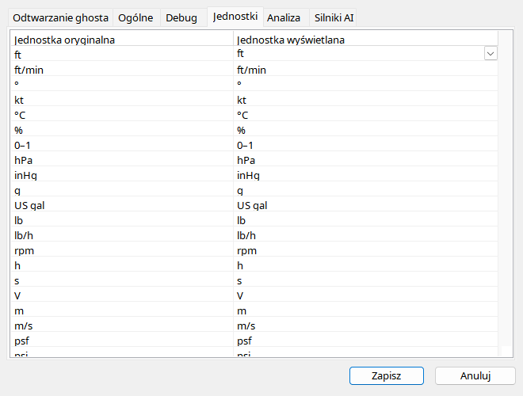

Wybierz jednostkê przy konkretnej kategorii, np. wysokoœci, prêdkoœci, temperatury, masy lub ciœnienia. SprawdŸ podpis wskaŸnika po zmianie; niektóre klasyczne instrumenty zachowuj¹ mechanikê stopow¹, mimo zmiany tekstu na metry. Ciœnienie barometryczne, oleju i hydrauliki to ró¿ne wielkoœci. Dla oleju naturalnym odczytem jest psi. Etykiety pozycji prze³¹czników s¹ s³ownikiem enumów, a nie konwersj¹ jednostek: FLAPS 5 pozostaje oznaczeniem klapy, nie liczb¹ stopni.
| Opcja / czynnoœæ | Dzia³anie i ograniczenia |
|---|---|
| Wiersze | Wybierz jednostkê danej wielkoœci. Inspektor/wykresy zmieniaj¹ wartoœæ i podpis, nie Ÿród³owy zapis. |
| Wysokoœæ / prêdkoœæ | Tekst po konwersji nie musi zmieniaæ klasycznej geometrii instrumentu. |
| Ciœnienie / paliwo | Odró¿niaj olej od baro oraz iloœæ od przep³ywu. Zegary oleju u¿ywaj¹ psi. |
| Enumy | Etykieta prze³¹cznika jest s³ownikiem, nie konwersj¹ jednostek; nieznana wartoœæ zostaje liczb¹. |
